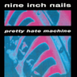
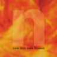
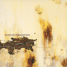
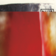
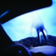
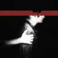
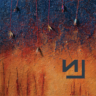
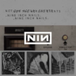
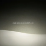

Nine Inch Nails
Trent Reznor
&
Atticus Ross

1989 • Pretty Hate Machine

1992 • Broken

1994 • The Downward Spiral

1999 • The Fragile
2005 • With Teeth

2007 • Year Zero

2008 • The Slip

2013 • Hesitation Marks

2016 - 2018 • The Trilogy

2008 & 2020 • Ghosts I-VI